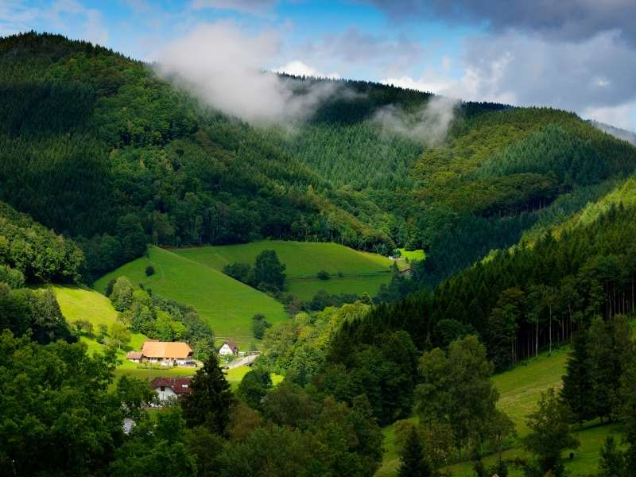
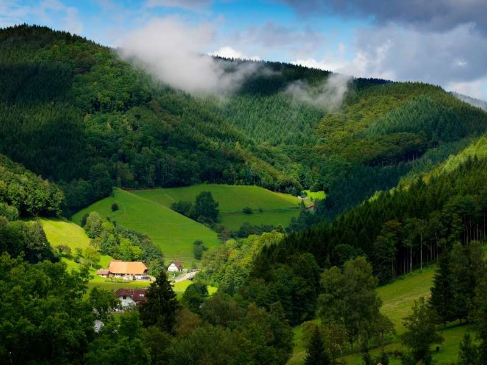

Monuments
Germany is a land of rich culture, historic landmarks, and striking architecture. From the iconic Brandenburg Gate in Berlin to the
fairytale castles of Bavaria and the medieval streets of Rothenburg ob der Tauber, each site tells a story of the nation’s vibrant
heritage. Discover the colors, traditions, and iconic sights that make Germany an unforgettable destination..
SHOW MORE
SHOW MORE


 
